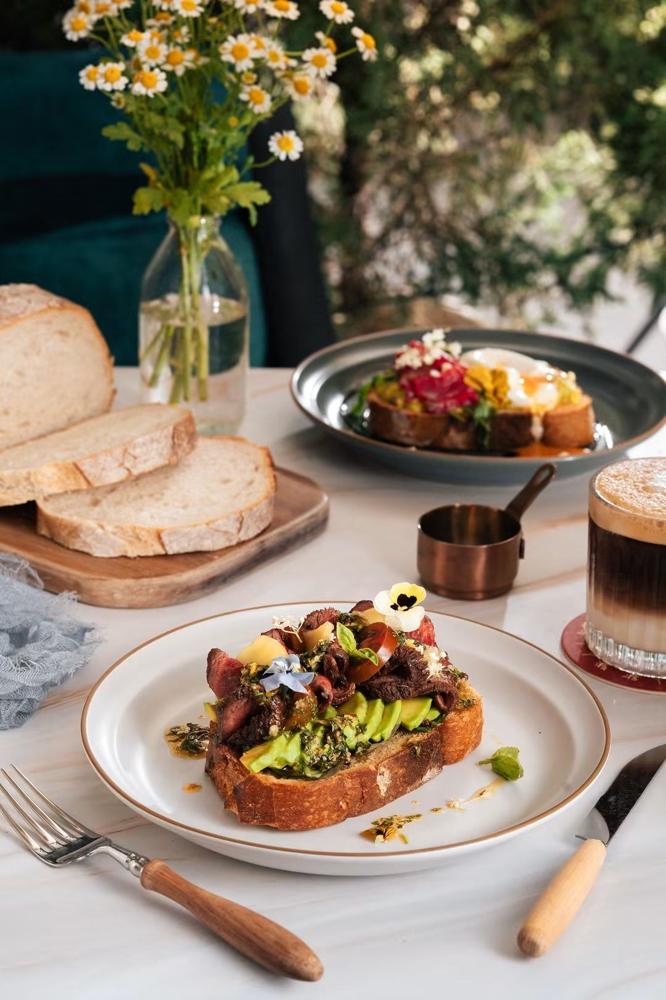
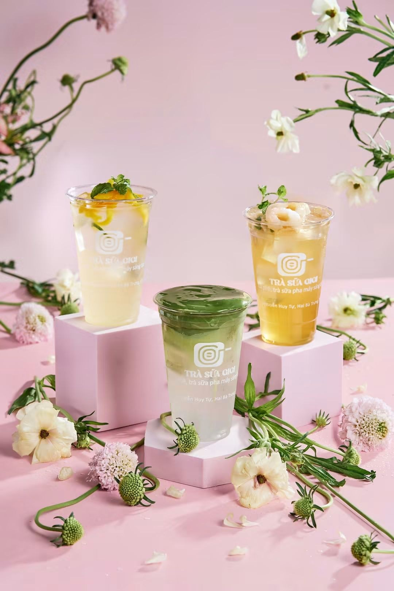

Trong ngành F&B, khách hàng thường “ăn bằng mắt” trước khi thực sự thưởng thức món ăn.
Một bức ảnh đẹp không chỉ cho thấy món ăn trông như thế nào. Nó truyền tải màu sắc, kết cấu, độ tươi ngon và phong cách của thương hiệu — đồng thời tạo cảm giác khiến người xem muốn thử món ăn ngay từ cái nhìn đầu tiên.
Tại G-Bros Creation, chúng tôi cung cấp dịch vụ chụp ảnh món ăn chuyên nghiệp tại Hà Nội dành cho nhà hàng, quán café, bar, bakery, khách sạn và các thương hiệu F&B.
Vì sao hình ảnh món ăn chuyên nghiệp lại quan trọng?
Ngày nay, khách hàng thường khám phá một nhà hàng hoặc quán café qua Google, Facebook, Instagram, TikTok, website hoặc các ứng dụng giao đồ ăn trước khi quyết định ghé thăm.
Điều đó có nghĩa hình ảnh món ăn chính là một trong những điểm tiếp xúc đầu tiên giữa thương hiệu và khách hàng.
Hình ảnh chất lượng cao có thể giúp doanh nghiệp:
- Làm nổi bật màu sắc, nguyên liệu và kết cấu của món ăn.
- Xây dựng hình ảnh thương hiệu chuyên nghiệp và đồng nhất.
- Tạo nội dung hấp dẫn hơn cho Facebook, Instagram và TikTok.
- Nâng cao chất lượng hình ảnh trên menu và nền tảng giao đồ ăn.
- Tăng sức hút cho website, Google Business Profile và các chiến dịch quảng cáo.
- Giúp món ăn mới hoặc chương trình khuyến mãi nổi bật hơn.
Không chỉ đơn giản là chụp một món ăn
Food photography hiệu quả cần nhiều hơn một chiếc máy ảnh tốt.
Ánh sáng, góc chụp, bố cục, màu sắc, background, props và cách trình bày món ăn đều ảnh hưởng đến cảm nhận của người xem.
Một ly cà phê có thể cần ánh sáng mềm để tạo cảm giác ấm áp. Một món ăn nóng có thể cần bắt được hơi nước và độ bóng để thể hiện sự tươi mới. Một món tráng miệng lại có thể cần tập trung vào từng lớp, kết cấu và chi tiết trang trí.
Mục tiêu không phải là làm món ăn trở nên khác với thực tế, mà là thể hiện món ăn ở phiên bản hấp dẫn nhất nhưng vẫn chân thật với sản phẩm và thương hiệu.
{kind=link}

Dịch vụ Food Photography tại G-Bros Creation
Mỗi thương hiệu F&B có một cá tính riêng. Vì vậy, chúng tôi xây dựng concept hình ảnh dựa trên phong cách, không gian, menu và mục tiêu truyền thông của từng khách hàng.
Dịch vụ có thể bao gồm:
Chụp ảnh món ăn & đồ uống
Hình ảnh chất lượng cao cho món chính, món tráng miệng, cà phê, cocktail và các loại đồ uống.
Chụp ảnh menu
Hình ảnh rõ ràng, đồng nhất phù hợp cho menu in, menu điện tử và nền tảng giao đồ ăn.
Lifestyle Food Photography
Đưa món ăn vào bối cảnh tự nhiên hơn với bàn ăn, không gian nhà hàng hoặc tương tác của khách hàng.
Chụp ảnh nhà hàng & không gian
Kết hợp hình ảnh món ăn với nội thất, quầy bar, khu vực phục vụ và những chi tiết đặc trưng của thương hiệu.
Nội dung cho mạng xã hội
Ảnh dọc, ngang và vuông được lên kế hoạch phù hợp với Facebook, Instagram, Google và các nền tảng digital.
Hình ảnh cho quảng cáo & chiến dịch
Visual dành cho món mới, seasonal menu, promotion, grand opening hoặc các chiến dịch truyền thông.
Một buổi chụp – Nhiều nội dung sử dụng
Một trong những lợi ích lớn nhất của việc lên kế hoạch food photography chuyên nghiệp là khả năng tạo ra một thư viện hình ảnh có thể sử dụng trên nhiều kênh khác nhau.
Thay vì chỉ tạo một vài hình ảnh đẹp, buổi chụp có thể được xây dựng để cung cấp nội dung cho:
Website • Menu • Google Business Profile • Facebook • Instagram • TikTok • Delivery Platforms • Digital Ads • Posters • Promotional Materials
Điều này giúp thương hiệu duy trì hình ảnh đồng nhất trong khi tận dụng tối đa ngân sách sản xuất nội dung.
{kind=link}

Kể câu chuyện thương hiệu qua món ăn
Một thương hiệu F&B mạnh không chỉ bán món ăn.
Đó có thể là cảm giác của một buổi sáng với cà phê và bánh ngọt, một bữa tối ấm cúng cùng bạn bè, một ly cocktail dưới ánh đèn buổi tối hay trải nghiệm khám phá một món ăn hoàn toàn mới.
Food photography có thể giúp kể những câu chuyện đó.
Tại G-Bros Creation, chúng tôi kết hợp photography, styling và creative direction để tạo nên những hình ảnh không chỉ đẹp mà còn phù hợp với cách thương hiệu muốn được khách hàng ghi nhớ.
Bạn đang cần hình ảnh mới cho nhà hàng hoặc quán café?
G-Bros Creation cung cấp dịch vụ Food & Beverage Photography tại Hà Nội cho nhà hàng, café, bar, bakery, khách sạn và các thương hiệu F&B.
G-Bros Creation
Số 62 Ngõ Yết Kiêu, Cửa Nam, Hoàn Kiếm, Hà Nội
0389 569 739
{kind=link}
{kind=link}
{kind=link}